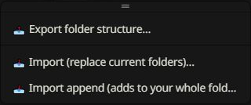
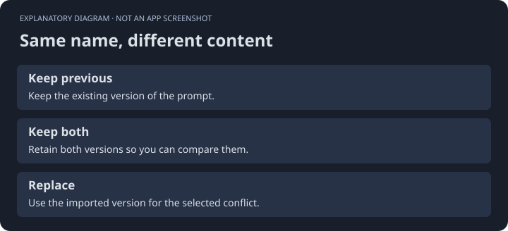
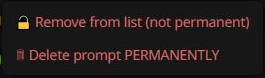
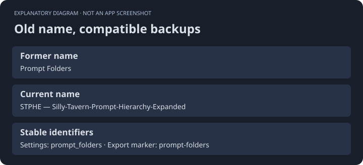

Keep a recoverable copy.
Use the Import / Export toolbar menu to transfer a hierarchy or make a backup before reorganizing it.
Export
A full export includes folder assignments, order, intended states, exclusions, saved filter presets, Auto Filter rules, and their groups. Native prompt definitions and active order are bundled when available. Folder and prompt context menus offer smaller exports.


Replace or append
Replace replaces folder organization. Append adds missing organization while retaining existing local choices. Import append after an entry places imported content alongside the selected entry. Read each confirmation, especially when restoring prompt definitions.
Name conflicts
If imported and existing prompts share a name but differ in content, the conflict dialog offers choices such as keep previous, keep both, or replace. Inspect the scope before choosing a replacement.


Removal choices
| Action | Result |
|---|---|
| Delete folder only | Keeps prompts and moves them up. |
| Remove from list | Keeps native definitions, which can be inserted again. |
| Delete permanently | Removes definitions and their native order references. Export first if recovery matters. |


Older backups
The internal prompt_folders settings key and prompt-folders export marker remain unchanged so renaming the extension does not strand your data.

